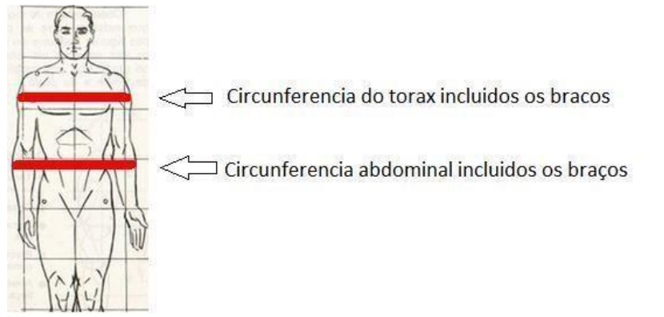

- EXAMES CONTRASTADOS:
• SEGUNDA -06:30 ÁS 18:30 - (PARA QUE ACABE ÁS 19:00) - SE ATENTAR COM HORÁRIOS DESTINADOS A ANESTESIA,SENDO DAS 07:00 ÁS 12:00 PARA QUE ACABE AS 12:30 )!*
• TERÇA - 06:30 ÁS 18:30 - (PARA QUE ACABE ÁS 19:00)
• QUARTA -06:30 ÁS 20:30 - (PARA QUE ACABE ÁS 21:00)
HORÁRIO DE JANTA ÁS 18:30 E 19:00 - AGENDAR SOMENTE RM DE JOELHOS E COLUNA LOMBAR
• QUINTA - 06H30 ÁS 18:30 - ( PARA QUE ACABE ÁS 19:00)
• SEXTA - 06H30 ÁS 18:30 - ( PARA QUE ACABE ÁS 19:00)
• SÁBADO - 06H30 ÁS 10:30 - (PARA QUE ACABE ÁS 11:00) - 14:00 ÁS 17:00 (PARA QUE ACABE ÁS 17:30)
• DOMINGO - 08:00 ás 11:30 ( PARA QUE ACABE ÁS 12:00)
_________________________________________________________________
ATENÇÃO:
• AGENDAR TODOS OS EXAMES EM SEQUENCIA, NÃO DEIXANDO BURACOS NA AGENDA.
• AGENDAMENTOS PARA O MESMO DIA, AVISAR GERENTE, PARA QUE A MESMA AVISE A SALA;
• PACIENTES ACIMA DE 65 ANOS PARA EXAMES CONTRASTADOS,NECESSÁRIO EXAME DE CREATININA COLETADO DENTRO DE ATÉ 90 DIAS, APÓS RESULTADO DE CREATININA, FAZER O CALCULO DO CLEARANCE E ANOTAR AMBOS RESULTADOS NA AGENDA;
• RESULTADOS MENOR QUE 60 - DR. MOSCATELLI PRECISA AUTORIZAR A REALIZAÇÃO;
• RESULTADO MAIOR QUE 60 - AGENDAR NORMALMENTE;
- TODOS OS AGENDAMENTOS DE RM DEVE CONTER O PESO E ALTURA DO PACIENTE;
- CASO CONVENIO: CAMPO 5 - 6 E 30 DA GUIA LIBERADA, CARTEIRINHA E AS PERGUNTAS OBRIGATÓRIAS DE RM;
- QUALQUER REGIÃO QUE FOR SUSPEITA DE TUMOR É NECESSÁRIO CONTRASTE;
- PACIENTES COM EXAME CONTRASTADO NECESSÁRIO UMA SEMANA DE INTERVALO DE UM EXAME CONTRASTADO PARA OUTRO ;
- RM DE COLUNA LOMBAR-LOMBOSACRA-DORSAL NO QUAL O PACIENTE JA OPEROU A REGIÃO É NECESSÁRIO AGENDAR EM HORARIO CONTRASTADO;
-ANGIO RM DE PESCOÇO E ANGIO DE CRANIO NÃO PODEM SER REALIZADOS NA MESMA DATA, AGENDAR COM 1 SEMANA DE INTERVALO ENTRE UM EXAME E OUTRO !!
- RM DE ATM AGENDAR EM HORARIO CONTRASTADO DE SEG A SEXTA DAS 07H AS 15H;
-ARTRO RM PRECISA SER COMBINADO O DIA E HORÁRIO COM O DR. MOSCATELLI ANTES DO AGENDAMENTO, O PACIENTE DEVE CHEGAR 1 HORA ANTES !!
- RM CARDÍACA COM STRESS OU PARA PESQUISA DE ISQUEMIA : NECESSÁRIO AGENDAR SOMENTE DE SEGUNDA OU TERÇA POIS É NECESSÁRIO A PRESENÇA DO DR CLAUDIO NA RESSONÂNCIA;NECESSÁRIO COMBINAR COM ELE O DIA E AVISAR A JÉSSICA SAC VG E BLOQUEAR O HORARIO DE ERGOMÉTRICO;
( SOMENTE UMA POR SEMANA ! ;
- RM CARDÍACA SEM STRESS - AGENDAR EM QUALQUER DIA EM HORARIOS CONTRASTADO;
-AGENDAMENTOS DE EXAMES COM E SEM CONTRASTE JUNTOS, SEMPRE REDOBRAR A ATENÇÃO REFERENTE AO HORARIO DUPLICADO, POIS VAI SER REALIZADO PRIMEIRO O EXAME SEM CONTRASTE,PARA DEPOIS O EXAME COM CONTRASTE;
- EXAMES COM ANESTESIA : PACIENTE DEVE TER AVALIAÇÃO PRE ANESTESICA PARA REALIZAR O EXAME, NO CASO DE NÃO POSSUIR ESSA AVALIAÇÃO, AGENDAR AVALIAÇÃO ANESTESICA COM A DR ENZO ANTES DE REALIZAR O AGENDAMENTO DO EXAME,NECESSÁRIO INCLUIR 1 HORÁRIO Á MAIS ;
- RM DAS MAMAS AGENDAR EM HORÁRIO CONTRASTADO, SE A PACIENTE MENSTRUAR AGENDAR DO 5 ° AO 15° DIA DO CICLO MENSTRUAL, NO CASO DE NÃO MENSTRUAR EM QUALQUER DATA NECESSÁRIO 1 HORÁRIO;
__________________________________________________________________
EXAMES QUE NÃO REALIZAMOS COM ANESTESIA:.
RM DE MAMAS - MÃOS - PUNHOS - COTOVELOS - DEDOS - ANTEBRAÇO - ENTERORESSONÂNCIA E CORAÇÃO;
NO ATO DO AGENDAMENTO PERGUNTAR SE O PACIENTE FAZ USO DE:
-MARCAPASSO NO CORAÇÃO
-STENT NO CORAÇÃO
-CLIP NEUROLÓGICO PARA ANEURISMA
-PROJÉTIL DE BALA ALOJADA NO CORPO
-IMPLANTE COCLEAR
-PROTESE, PLACA,PARAFUSO, PINO
- SUSPEITA DE TUMOR
- APARELHO ODONTOLÓGICO FIXO
- SE POSSUI CLAUSTROFOBIA
- Se possuir MARCAPASSO NO CORAÇÃO E CLIP NEUROLÓGICO PARA ANEURISMA - O paciente deve ter uma carteirinha aonde descreve que o marcapasso ou o clip é apto e compatível com o aparelho de Ressonância Magnética, sendo assim também é necessário a presença do técnico do marcapasso ou clip neurológico.
-STENTE NO CORAÇÃO - Pode realizar acima de 3 meses de uso. (Caso implatado recentemente,necessário confirmar com o Dr.Moscatelli)
- PROJÉTIL DE BALA ALOJADA NO CORPO - Se a bala estiver alojada próximo de orgãos vitais deve ser realizado um RX para verificar com a Biomédica se será possível realizar o exame de Ressonância.
- IMPLANTE COCLEAR: Se a resposta for , SIM: Deverá ter uma carta de seu médico liberando a realização do exame, e ainda, se o implante é compatível com o aparelho de Ressonância Magnética.
- PROTESE, PINO, PLACA, PARAFUSO - Pode realizar acima de 3 meses de uso. Caso seja Titanuo o material utilizado e a cirugia seja recente confirmar na ressonância se pode realizar com menos de 45 dias.
- APARELHO ODONTOLÓGICO FIXO - Perguntar se possui apenas para realização dos exames de CRANIO, SEIOS DA FACE, HIPOFISE,CERVICAL, OUVIDO, ( TODAS AS AREAS RELACIONADA A REGIÃO DA FACE E CERVICAL) pois o aparelho pode dar interferência na imagem, então o paciente deve vir fazer um teste no aparelho antes do agendamento para ser verificado se vai ser possível realizar o exame ou se será informado que deverá tirar o aparelho no dentista e retornar para o agendamento e realização.
QUANTIDADE DE HORÁRIOS PARA AGENDAMENTO DOS EXAMES:
- RM MÃO - 1 HORÁRIO CADA LADO
- RM PUNHO - 1 HORÁRIO CADA LADO
!! LEMBRANDO QUE QUANDO FOR SOLICITADO MÃOS E PUNHOS (4 EXAMES), É NECESSÁRIO DIVIDIR O EXAME EM 2 DIAS, DANDO O INTERVALO DE 7 DIAS ENTRE UM EXAME E OUTRO !!
- RM PLEXO BRAQUIAL - 2 HORÁRIOS
- RM COLANGIO - 2 HORÁRIOS
RM PESCOÇO - 2 HORÁRIOS
- RM SEIO DA FACE - 2 HORÁRIOS
-RM COLUNA TORACOLOMBAR - 2 HORÁRIO
-RM PELVE - 2 HORÁRIOS (PASSAR PREPARO DO MINILAX)
-RM ABDOMEM TOTAL - 3 HORÁRIOS ( PASSAR PREPARO MINILAX )
-RM PROSTATA MULTIPARAMETRICA - 2 HORÁRIOS ( PASSAR MINILAX )
-RM PROSTATA - 2 HORÁRIOS
Ressonancia Magnética para pacientes com 100 kg ou mais
Anotar o peso e a altura do paciente;
Acessar o site: CALCULO IMC Ou utilizar metodo abaixo.
IMC
Altura Não usar virgula "," - Utilizar apenas Ponto"."
Peso
Inserir o peso e a altura do paciente e clicar em
“calcular”.
Anotar o IMC (Índice de massa corpórea) e seguir a
orientação abaixo:
Até 29 = agendar normalmente.
Acima de 29 = O paciente deve medir em casa, com
fita métrica, a circunferência do abdômen e do
tórax incluindo os braços.

Valor da circuferencia do abdomen //Sem ponto "."
Valor circuferencia do Torax //Sem ponto "."
Clearense de Creatina
Peso do paciente
Idade do paciente
creatina, não usar virgula(,) apenas ponto (.)
TOMOGRAFIA
APARELHO MULTISLICE - RECONSTRUÇÃO EM 3D
- AGENDAR EXAMES EM SEQUENCIA (PROCURAR NÃO DEIXAR BURACOS NA AGENDA)
- CT CORONÁRIAS NÃO REALIZADA NO BIOLABOR.
DEMAIS TOMOGRAFIAS COMUNS E ROTINEIRAS, RELIZADAS NESTA AGENDA (PENHA).
- CT ABDOMEN TOTAL, CT ABDOMEN SUPERIOR, CT PELVE COM E SEM CONTRASTE - DEVE SER AGENDADO A PARTIR DAS 9H30 E SOLICITAR ANTECEDENCIA DE 2 HORAS PARA O PACIENTE.
- CT SEIOS DA FACE, CT MASTÓIDE, CT CRANIO, CT HIPÓFESE - SOLICITAR QUE RETIRE O PIRCING E BRINCOS (NA REGIÃO ESTUDADA, ACIMA CITADAS) ANTES DE SE DIRIGIR A REALIZAÇÃO DO EXAME.
- ANGIO TOMOGRAFIAS AGENDAR SOMENTE DUAS POR AGENDA, NOS ÚLTIMOS 4 HORÁRIOS (CADA ANGIO CT = 2 HORÁRIOS).
- CT ABDOMEN - AGENDAR SOMENTE *4* POR AGENDA, EM *2* HORÁRIOS CADA - NÃO SE ESQUECER DA ANTECEDENCIA DE 2 HORAS.
- CT CONTRASTADA NÃO É REALIZADA AOS SÁBADOS. __________________________________________________________________
PERGUNTAS PARA EXAME CONTRASTADO:
PARA QUALQUER TOMOGRAFIA CONTRASTADA, DEVERÁ SER FEITO AS SEGUINTES PERGUNTAS PARA O PACIENTE:
1. Já teve edema de glote (garganta fechada por alergia)? Se sim, infelizmente o exame não poderá ser realizado no Biolabor, somente em ambiente hospitalar, desde que o exame só possa ser realizado COM CONTRASTE.
2. Paciente diabético: Faz uso de: metformina, Glifage, Dimefor, Glucoformin, Glucophage etc? Se sim, deverá suspender 48 horas antes do exame.
__________________________________________________________________
CONTRASTADOS AS TERÇAS-FEIRAS:
SOMENTE AS TERÇAS-FEIRAS, OS EXAMES CONTRASTADOS DEVERÃO SER AGENDADOS À PARTIR DAS 9H - POIS É NECESSÁRIO A PRESENÇA DE UM MÉDICO NA UNIDADE.
__________________________________________________________________
Identificação de contraste para: SELA TÚRCICA, HIPÓFESE, PESCOÇO, TÓRAX, ÓRBITAS, ABD. SUPERIOR, ABD. TOTAL E PELVE:
- Pedidos médicos que solicitam Tomografias de: Sela Túrcica, Hipófese, Pescoço, Tórax, Órbitas, Abdomen Superior, Abdomen Total ou Pelve sem especificação de contraste, o(a) paciente deverá ser informado que neste caso, a decisão será de nosso médico radiologista no dia do seu exame.
- O paciente deverá então, ser informado sobre as duas possibilidades de valores: VALOR COM E SEM CONTRASTE!
- E ainda, ser agendado em horário exclusivo para Tomografias contrastadas, seguindo as restrições e preparos do exame com contraste (ANTECEDENCIA, CREATININA, JEJUM E PERGUNTAR SOBRE EDEMA DE GLOTE E MEDICAMENTOS PARA DIABETES), para que, caso seja necessário, o paciente esteja preparado para receber o contraste.
__________________________________________________________________
CREATININA PARA PACIENTES COM 65 ANOS OU MAIS:
PACIENTE COM 65 ANOS OU MAIS PARA REALIZAÇÃO DE TOMO COM CONTRASTE - É NECESSÁRIO CREATININA COM VALIDADE DE 3 MESES, E, CASO NÃO TENHA, DEVERÁ REALIZAR ATÉ 2 DIAS ANTES DO EXAME (SEM ONUS). CASO TENHA, DEVERÁ APRESENTAR NO AGENDAMENTO E NO DIA DA REALIZAÇÃO.
__________________________________________________________________
COM ANESTESIA:
1º PASSO: PRÉ CONSULTA COM A DRA THAIS (AGENDADA NA PENHA AS SEGUNDAS-FEIRAS) - VALOR DE R$100,00 EM DINHEIRO PARA PACIENTES NO PARTICULAR/CONVÊNIOS, DESDE QUE TENHA COBERTURA PARA A ANESTESIA, COBRE A PRÉ CONSULTA.
2º PASSO: SERÁ AGENDADO NA RECEPÇÃO DA PENHA A DATA DO EXAME COM ANESTESIA - DATA DEFINIDA PELA DRA THAÍS, EXCETO AOS SÁBADOS!
************ NÃO AGENDAR ANESTESIA NO SÁBADO***************
__________________________________________________________________
MÉDICOS RADIOLOGISTAS E DIAS QUE ATENDEM NA PENHA:
Dr Moscatelli - Seg - Quarta- Quinta / Dra. Sonia - terca - / Dr. Mauro Sexta
__________________________________________________________________
CONFIRMAÇÕES DE PEDIDOS MÉDICOS:
PEDIDOS MÉDICOS CONFIRMADOS COM DR MOSCATELLI AGENDAR NO DIA EM QUE DR MOSCATELLI ESTÁ NA UNIDADE (SEGUNDA, QUARTA E QUINTA).
__________________________________________________________________
PEDIDOS MÉDICOS CONFIRMADOS COM DRA SONIA AGENDAR NO DIA EM QUE DRA SONIA ESTÁ NA UNIDADE (TERÇA-FEIRA). _ _________________________________________________________________